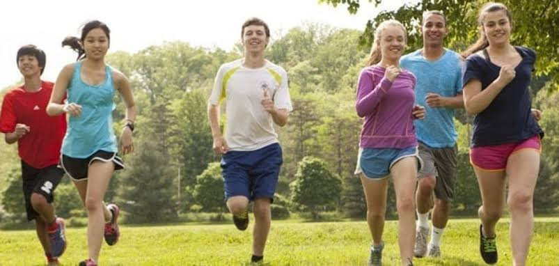

Exercise For Teens, Adult, and Oldie
Teens
Exercise is an important part of keeping teens healthy. Encouraging healthy lifestyles
in children and teens is important for when they grow older. Lifestyles that are learned in
childhood are more likely to stay with the child into adulthood. Some changes in lifestyle can
be harder to make as a person ages. The best way to promote healthy lifestyles is for the whole
family to become involved.
Establishing an exercise plan
A daily exercise program is a fun way to share physical activity with family
and friends while helping to establish good heart-healthy habits. The following
exercise guidelines for teens can help you and your teen plan activities:
Teenagers need at least 60 minutes of moderate to vigorous physical activity on
most days to maintain good health and fitness, and for healthy weight during growth.
Parents are encouraged to limit a teen's screen time (TV, video, and computers) to
less than 2 hours daily and replace these sitting activities with activities that require more movement.
Even low-to-moderate intensity activities for as little as 30 minutes a day can be helpful.
These activities may include the following:
- Pleasure walking
- Home Exercise
- Dancing
- Climbing stairs
Regular aerobic physical activity increases a teen's capacity for exercise. It also plays a role in the prevention of heart diseases and type 2 diabetes . Aerobic activities are continuous activities that cause the heart rate and breathing rate to increase. To prevent dehydration, encourage your teen to drink fluid regularly during physical activity. Also, have them drink several glasses of water or other fluid with no added sugar after the physical activity is completed. Examples of vigorous activities may include:
- Brisk walking
- Tag games
- Soccer
- Hiking
- Gymnastics
- Dancing
- Playing on the playground
- Jumping rope
- Roller skating
- Cycling
- Swimming
- Running
For teens, daily exercise may help prevent conditions such as obesity,
high blood pressure, and abnormal cholesterol levels, as well as poor lifestyle
habits that lead to heart attack and stroke later in life.
Exercise on a regular basis is part of a healthy lifestyle. But some teenagers can
exercise too much. If your teen begins losing weight and falls below expected growth
patterns, or if exercise interferes with other normal activities including school, you should talk with your teen's healthcare provider.

Adult
Fitness looks a little different for everyone. Whether you lift weights, do yoga, or love to run, the best type of movement for you is truly that which makes you feel happier and healthier. As you approach middle age, though, it becomes increasingly important to exercise with a specific goal in mind: to keep your body as strong and mobile as possible so that you can move and live freely well into your older years. To maintain the strength you need, trainers recommend focusing on the following types of exercises in middle age and beyond.
Inactive Adults
Remember to start slowly! Aim for light or moderate intensity for short periods of time. Make sure to spread out the physical activity sessions throughout the week. Increase physical activity gradually over a period of weeks to months.
Talk to your doctor if you have a chronic health condition (such as heart disease, arthritis, or diabetes) or symptoms (such as chest pain or pressure, dizziness, or joint pain) before starting a physical activity program.
Warm-up and Cool-down
It is important to incorporate slower speed or lower intensity activities at the beginning and end of your routine to properly warm up and cool down your body. This helps to prevent injuries and reduce muscle soreness. Examples of warming-up would be to walk briskly before jogging or lift a lighter weight before completing the actual weight used during weight training. After completing the physical activity, gradually slow down or lower intensity to help the body cool down. Good news, adults can count the time spent during warm-up and cool-down towards meeting aerobic activity guidelines.
Aerobic Activity
To gain the most health benefits, adults should aim for at least 150 minutes (2 hours and 30 minutes) of moderate-intensity aerobic activity each week, 75 minutes (1 hour and 15 minutes) of vigorous-intensity aerobic physical activity each week, or an equivalent combination of moderate- and vigorous-intensity aerobic activity. Perform aerobic activity for at least 3 days a week to help avoid excessive fatigue and reduce risk of injury. It counts as long as the aerobic activity is performed at a moderate or vigorous effort for at least 10 minutes at a time.
Muscle-Strengthening Activity
wo benefits of participating in muscle-strengthening activity are increased bone strength and muscular fitness. Adults should participate in muscle-strengthening activities at least 2 days a week while including all major muscle groups: the legs, hips, back, chest, abdomen, shoulders, and arms. One set of 8 to 12 repetitions of each exercise is effective, but doing two or three sets of 8 to 12 repetitions may be more effective. Stronger muscles occur after increases in the amount of weight or the days each week of exercising.
Flexibility Activities
Even though flexibility does not have recommended guidelines, it is an important part of physical fitness. Flexibility plays an integral part in some types of physical activities such as dancing. Adults should perform stretching exercises to help increase flexibility. Activities that require greater flexibility is easier for adults who perform stretching exercises.

Oldie
Exercise and nutrition are essential parts of a healthy lifestyle throughout one’s life, and as we age, our requirements are ever changing. A growing body of research illustrates how regular exercise is especially important for seniors, and how more seniors are opting for an active lifestyle instead of a sedentary one. This article will show you the benefits of exercise for older adults, the seven best forms of exercise for seniors, and a few exercises that may be hazardous to seniors’ health.
The Health Benefits of Exercise in Older Adults
Our biology changes as we get older, causing seniors to have different reasons for staying in shape than younger generations. Though physical fitness provides benefits at any age, the health perks physically fit seniors enjoy are more notable. Physicians and researchers say seniors should remain as active as possible, without overexerting one’s self. In older adults, exercise helps you live a longer, healthier, and more joyous life.
Water aerobics
In the past years, water aerobics have become an extremely popular form of exercise among all ages, but in particular to seniors. Exercising in the water is ideal for those living with arthritis and other forms of joint pain, as the buoyancy of the water puts less stress on your joints. Additionally, water brings natural resistance, which eliminates the need for weights in strength training. Water aerobics exercises improve your strength, flexibility, and balance with minimal stress on your body. Great water aerobics exercises for seniors include:
- Aqua jogging
- Flutter kicking
- Leg lifts
- Standing water push-ups
- Arm curls
Chair yoga
Like water aerobics, chair yoga is a low-impact form of exercise that improves muscle strength, mobility, balance and flexibility,
all of which are crucial health aspects for seniors. Chair yoga is an accessible form of yoga that provides less stress on muscles,
joints, and bones than more conventional forms of yoga.
As an added bonus, chair yoga has been shown to improve mental health in older adults. Regular chair yoga participants have better quality sleep, lower instances of depression, and report a general sense of well-being.
Great chair yoga exercises for seniors include:
- Overhead stretch
- Seated cow stretch
- Seated cat stretch
- Seated mountain pose
- Seated twist
Resistance band workouts
Resistance bands are stretchy strips of rubber that add resistance to workouts with reduced stress on your body. Resistance band workouts are user-friendly, and accessible for beginners. This form of exercise is growing more popular among seniors because of the relatively cheap up-front costs of materials, which makes resistance band workouts ideal for at-home exercise. Additionally, these exercises are ideal for strengthening your core, which improves posture, mobility, and balance.
Resistance band workouts for seniors include:
- Band pull apart
- Bicep curl
- Lateral raise
- Triceps press
- Leg press
Pilates
Pilates is a popular low-impact form of exercise that was developed a century ago.
In pilates exercises, breathing, alignment, concentration and core strength are emphasized,
and typically involves mats, pilates balls, and other inflated accessories to help build strength
without the stress of higher-impact exercises. Pilates has been shown to improve balance, develop
core strength and increase flexibility in older adults.
Some great pilates exercises for older adults include:
- Mermaid movement
- Side circles
- Food slides
- Step ups
- Leg circle
Related Post: